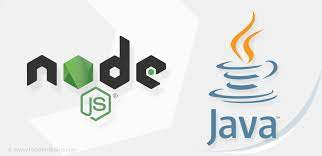

Herramientas De Tecnología Backend:
Herramientas De Tecnología Backend:
Herramientas De Tecnología Backend:
Herramientas De Tecnología Backend:
JavaScript en los últimos años se ha posicionado como uno de los lenguajes más empleados en la tecnología de programación.
Ahora bien Node.js es un entorno de ejecución multiplataforma de JavaScript, que principalmente se basa en crear sitios web eficientes y se emplea para desarrollar aplicaciones de servidor, lo cual permite fijar y ejecutar varias conexiones al mismo tiempo.
| Velocidad | Es veloz a comparación de otras tecnologías. |
| Adaptabilidad | Es empleado para la web, pero tiene un campo amplio de uso como para aplicaciones de consola, aplicaciones de escritorio, robótica, e internet. |
| Asincronismo | Admite utilizar múltiples peticiones en la web. |
| Comunicación | Su competencia de comunicación en tiempo real. |
| Integración | Su capacidad para integrarse a diferentes conjuntos de tecnologías (Stacks). |
| Api inestable | Se refiere a que tiende a cambiar en formas que quiebran la compatibilidad que va de versión en versión, por ende, cada vez debe estar realizando los cambios necesarios en el código para que siga funcionando en las versiones más recientes. |
| Falta de librería Estándar | Al ser un lenguaje con un buen núcleo, la desventaja es que tiene una baja librería estándar. |
| Falta de librerías en general | Dicho lenguaje no ha poseído años de prestigio en el lado servidor, razón por la cual algunas librerías no han sido probadas. |
| Muchas formas de programar | Cuando el conjunto de desarrollo no esta muy adaptado con los patrones de diseño estándar, cabe la posibilidad de que existan diferentes formas de programar y de obtener código diferente y difícil de sostener. |
El tipo de licencia de Node.js es Open Source con licencia MIT creada en el Instituto Tecnológico de Massachusetts , siendo un software de licencia gratuito, en donde cede al usuario final los derechos como son: copiar, modificar, vincular, compartir, etc.
Con las siguientes restricciones:

Es diferente a otros lenguajes de programación más estructurados, por lo que esto representa que el tiempo de aprendizaje pueda ser mas prolongado para las personas expertas en programación que están acostumbradas a manejar otro tipo de sistemas. Por otro lado, será fácil para las personas que ya tengan conocimiento el lenguaje JavaScript.
Puedo citar como ejemplo de uso, una empresa que utiliza Node.js es Netflix.
Node.sj se concentra principalmente en la seguridad y el rendimiento de sus aplicaciones.
Como sabemos Netflix es una empresa extremadamente popular ya que brinda servicios de entretenimiento, que tiene su sede principal en California que fue fundada el 29 de Agosto de 1997 por Reed Hastings y Marc Randolph.
Esta empresa en el año 2019 generó un lucro de $20.156 mil millones, esta empresa empleaba Java (BackEnd) y JavaScript (Frontend), a su vez los desarrolladores de esta aplicación debían estar debidamente instruidos en estos dos lenguajes, por tal motivo tuvieron que limpiar y eliminar errores dos veces, una cada para cada lenguaje, y esto resulto un gasto para la empresa, es por esto que la empresa Netflix decidió cambiar al framework Node.js ya que les facilitaba su manejo y a su vez disminuía la cantidad de trabajo por parte de los desarrolladores llegando a la conclusión de que les resulto rentable su cambio.
Los motivos por lo que Netflix realizo este cambio a Node.js es que:
Se basa en una inmensa cuantía de módulos que son de Open Source.
Además, sustituir el final del servidor y el final del usuario con un solo idioma.
La página oficial de Node.js es:
